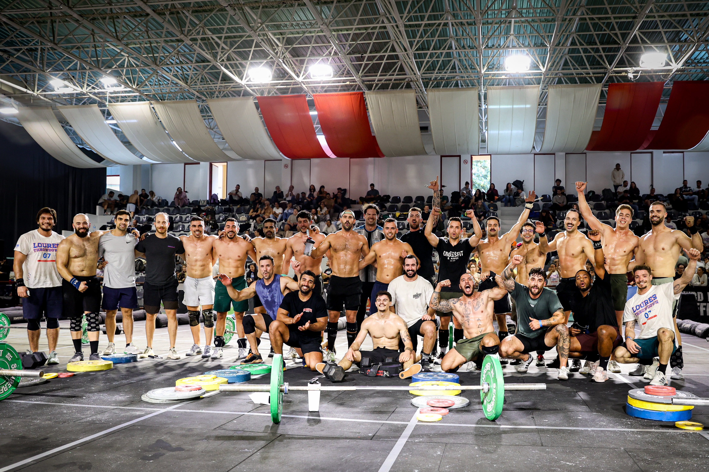
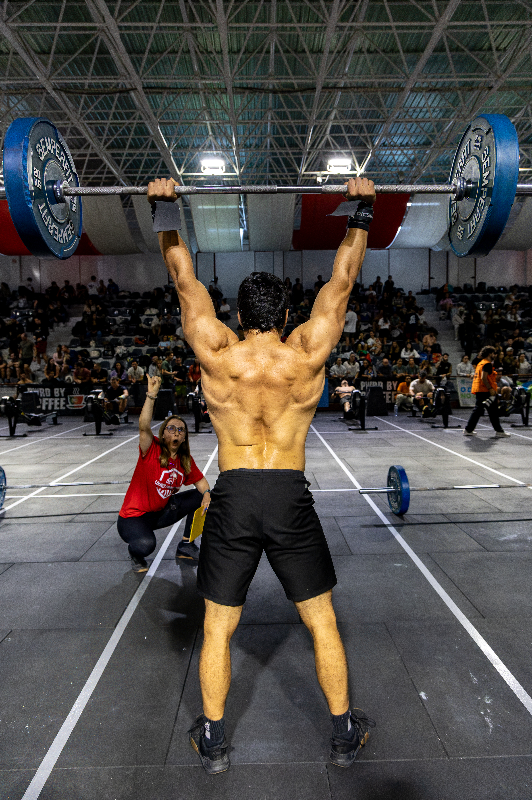

Loures Throwdown 2026 brought two days of national functional fitness competition to the Pavilhão Paz e Amizade in Loures on 7 and 8 November.
Organised by CrossFit Parque das Nações with support from Loures City Council, the event ran from 09:00 to 17:00 and gathered athletes from across Portugal.
Strength under pressure
The programme combined changing physical tests designed to challenge strength, speed, endurance, coordination and agility. Weightlifting, gymnastics, running and rowing were among the disciplines described by the event’s official information.


Teamwork in focus
The competition floor demanded both individual control and coordinated effort. The tyre-carry sequence captured the shared timing needed to move a heavy object, while the barbell test placed technique and composure at the centre of the challenge.
The closing group image reflected the wider community around the event: athletes, judges, volunteers and spectators sharing the same arena across the weekend.
Image Media coverage
Reporting: IM News Editorial Desk
Coverage photographers: Pedro Oliveira; Leandro Rocha; Mateus Pereira; Luan Chepernate; Luis Moreira
Dates, venue, timetable and organiser checked against the official event listing and organiser information.